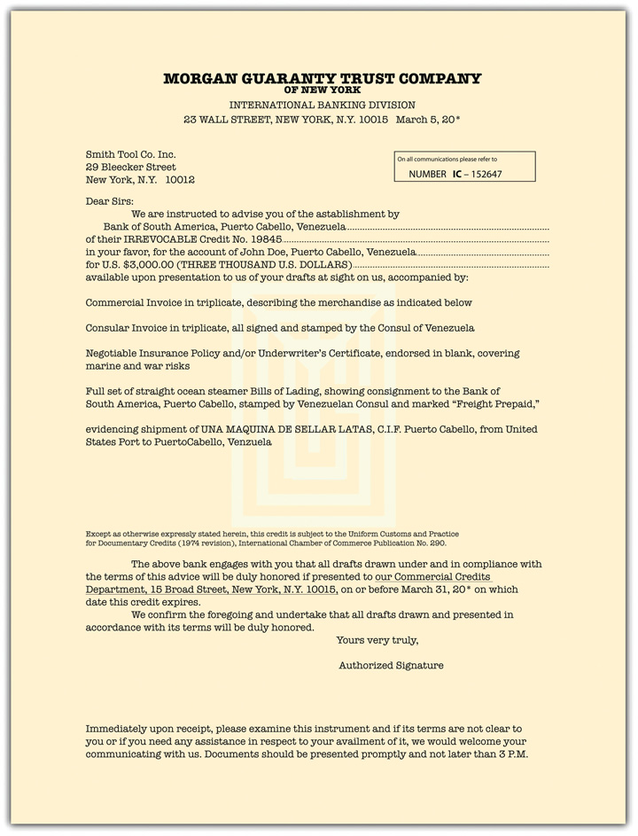

Another way that money is transferred is by commercial fund transfers or wholesale funds transfersTransfers of large sums of money—tens of millions of dollars—between businesses or between businesses and financial institutions., which is by far the largest segment of the US payment system measured in amounts of money transferred. It is trillions of dollars a day. Wholesale transactions are the transfers of funds between businesses or financial institutions.
It was in the development of commercial “wholesale wire transfers” of money in the nineteeth and early twentieth centuries that businesses developed the processes enabling the creation of today’s consumer electronic funds transfers. Professor Jane Kaufman Winn described the development of uniform law governing commercial funds transfers:
Although funds transfers conducted over funds transfer facilities maintained by the Federal Reserve Banks were subject to the regulation of the Federal Reserve Board, many funds transfers took place over private systems, such as the Clearing House for Interbank Payment Systems (“CHIPS”). The entire wholesale funds transfer system was not governed by a clear body of law until U.C.C. Article 4A was promulgated in 1989 and adopted by the states shortly thereafter. The Article 4A drafting process resulted in many innovations, even though it drew heavily on the practices that had developed among banks and their customers during the 15 years before the drafting committee was established. While a consensus was not easy to achieve, the community of interests shared by both the banks and their customers permitted the drafting process to find workable compromises on many thorny issues.Jane Kaufman Winn, Clash of the Titans: Regulating the Competition between Established and Emerging Electronic Payment Systems, http://www.law.washington.edu/Directory/docs/Winn/Clash%20of%20the%20Titans.htm.
All states and US territories have adopted Article 4A. Consistent with other UCC provisions, the rights and obligations under Article 4A may be varied by agreement of the parties. Article 4A does not apply if any step of the transaction is governed by the Electronic Fund Transfer Act. Although the implication may be otherwise, the rules in Article 4A apply to any funds transfer, not just electronic ones (i.e., transfers by mail are covered, too). Certainly, however, electronic transfers are most common, and—as the Preface to Article 4A notes—a number of characteristics of them influenced the Code’s rules. These transactions are characterized by large amounts of money—multimillions of dollars; the parties are sophisticated businesses or financial institutions; funds transfers are completed in one day, they are highly efficient substitutes for paper delivery; they are usually low cost—a few dollars for the funds transfer charged by the sender’s bank.
The UCC “Prefatory Note” to Article 4A observes that “the funds transfer that is covered by Article 4A is not a complex transaction.” To illustrate the operation of Article 4A, assume that Widgets International has an account with First Bank. In order to pay a supplier, Supplies Ltd., in China, Widgets instructs First Bank to pay $6 million to the account of Supplies Ltd. in China Bank. In the terminology of Article 4A, Widgets’ instruction to its bank is a “payment order.” Widgets is the “sender” of the payment order, First Bank is the “receiving bank,” and Supplies Ltd. is the “beneficiary” of the order.
When First Bank performs the purchase order by instructing China Bank to credit the account of Supplies Limited, First Bank becomes a sender of a payment order, China Bank becomes a receiving bank, and Supplies Ltd. is still the beneficiary. This transaction is depicted in Figure 26.3 "Funds Transfer". In some transactions there may also be one or more “intermediary banks” between First and Second Bank.
Figure 26.3 Funds Transfer

Three legal issues that frequently arise in funds transfer litigation are addressed in Article 4A and might be mentioned here.
First, who is responsible for unauthorized payment orders? The usual practice is for banks and their customers to agree to security procedures for the verification of payment orders. If a bank establishes a commercially reasonable procedure, complies with that procedure, and acts in good faith and according to its agreement with the customer, the customer is bound by an unauthorized payment order. There is, however, an important exception to this rule. A customer will not be liable when the order is from a person unrelated to its business operations.
Second, who is responsible when the sender makes a mistake—for instance, in instructing payment greater than what was intended? The general rule is that the sender is bound by its own error. But in cases where the error would have been discovered had the bank complied with its security procedure, the receiving bank is liable for the excess over the amount intended by the sender, although the bank is allowed to recover this amount from the beneficiary.
Third, what are the consequences when the bank makes a mistake in transferring funds? Suppose, for example, that Widgets (in the previous situation) instructed payment of $2 million but First Bank in turn instructed payment of $20 million. First Bank would be entitled to only $2 million from Widgets and would then attempt to recover the remaining $18 million from Supplies Ltd. If First Bank had instructed payment to the wrong beneficiary, Widgets would have no liability and the bank would be responsible for recovering the entire payment. Unless the parties agree otherwise, however, a bank that improperly executes a payment order is not liable for consequential damages.
Because international trade involves risks not usually encountered in domestic trade—government control of exports, imports, and currency; problems in verifying goods’ quality and quantity; disruptions caused by adverse weather, war; and so on—merchants have over the years devised means to minimize these risks, most notably the letter of credit (“LC”). Here are discussed the definition of letters of credit, the source of law governing them, how they work as payments for exports and as payments for imports.
A letter of creditA statement by a bank (or other financial institution) that it will pay a specified sum of money to specific persons if certain conditions are met. is a statement by a bank (or other financial institution) that it will pay a specified sum of money to specific persons if certain conditions are met. Or, to rephrase, it is a letter issued by a bank authorizing the bearer to draw a stated amount of money from the issuing bank (or its branches, or other associated banks or agencies). Originally, a letter of credit was quite literally that—a letter addressed by the buyer’s bank to the seller’s bank stating that the former could vouch for their good customer, the buyer, and that it would pay the seller in case of the buyer’s default. An LC is issued by a bank on behalf of its creditworthy customers, whose application for the credit has been approved by that bank.
Letters of credit are governed by both international and US domestic law.
Many countries (including the United States) have bodies of law governing letters of credit. Sophisticated traders will agree among themselves by which body of law they choose to be governed. They can agree to be bound by the UCC, or they may decide they prefer to be governed by the Uniform Customs and Practice for Commercial Documentary Credits (UCP), a private code devised by the Congress of the International Chamber of Commerce. Suppose the parties do not stipulate a body of law for the agreement, and the various bodies of law conflict, what then? Julius is in New York and Rochelle is in Paris; does French law or New York law govern? The answer will depend on the particulars of the dispute. An American court must determine under the applicable principles of the law of “conflicts of law” whether New York or French law applies.
The principal body of law applicable to the letter of credit in the United States is Article 5 of the UCC. Section 5-103 declares that Article 5 “applies to letters of credit and to certain rights and obligations arising out of transactions involving letters of credit.” The Official Comment to 5-101 observes, “A letter of credit is an idiosyncratic form of undertaking that supports performance of an obligation incurred in a separate financial, mercantile, or other transaction or arrangement.” And—as is the case in other parts of the Code—parties may, within some limits, agree to “variation by agreement in order to respond to and accommodate developments in custom and usage that are not inconsistent with the essential definitions and mandates of the statute.” Although detailed consideration of Article 5 is beyond the scope of this book, a distinction between guarantees and letters of credit should be noted: Article 5 applies to the latter and not the former.
The following discussion presents how letters of credit work as payment for exports, and a sample letter of credit is presented at Figure 26.4 "A Letter of Credit".
Figure 26.4 A Letter of Credit
Julius desires to sell fine quality magic wands and other stage props to Rochelle’s Gallery in Paris. Rochelle agrees to pay by letter of credit—she will, in effect, get her bank to inform Julius that he will get paid if the goods are right. She does so by “opening” a letter of credit at her bank—the issuing bank—the Banque de Rue de Houdini where she has funds in her account, or good credit. She tells the bank the terms of sale, the nature and quantity of the goods, the amount to be paid, the documents she will require as proof of shipment, and an expiration date. Banque de Rue de Houdini then directs its correspondent bank in the United States, First Excelsior Bank, to inform Julius that the letter of credit has been opened: Rochelle is good for it. For Julius to have the strongest guarantee that he will be paid, Banque de Rou de Houdini can ask First Excelsior to confirm the letter of credit, thus binding both Banque de Rue de Houdini and Excelsior to pay according to the terms of the letter.
Once Julius is informed that the letter of credit has been issued and confirmed, he can proceed to ship the goods and draw a draft to present (along with the required documents such as commercial invoice, bill of lading, and insurance policy) to First Excelsior, which is bound to follow exactly its instructions from Banque de Rue de Houdini. Julius can present the draft and documents directly, through correspondent banks, or by a representative at the port from which he is shipping the goods. On presentation, First Excelsior may forward the documents to Banque de Rue de Houdini for approval and when First Excelsior is satisfied it will take the draft and pay Julius immediately on a sight draft or will stamp the draft “accepted” if it is a time draft (payable in thirty, sixty, or ninety days). Julius can discount an accepted time draft or hold it until it matures and cash it in for the full amount. First Excelsior will then forward the draft through international banking channels to Banque de Rue de Houdini to debit Rochelle’s account.
US importers—buyers—also can use the letter of credit to pay for goods bought from abroad. The importer’s bank may require that the buyer put up collateral to guarantee it will be reimbursed for payment of the draft when it is presented by the seller’s agents. Since the letter of credit ordinarily will be irrevocable, the bank will be bound to pay the draft when presented (assuming the proper documents are attached), regardless of deficiencies ultimately found in the goods. The bank will hold the bill of lading and other documents and could hold up transfer of the goods until the importer pays, but that would saddle the bank with the burden of disposing of the goods if the importer failed to pay. If the importer’s credit rating is sufficient, the bank could issue a trust receipt. The goods are handed over to the importer before they are paid for, but the importer then becomes trustee of the goods for the bank and must hold the proceeds for the bank up to the amount owed
Wholesale funds transfers are a mechanism by which businesses and financial institutions can transmit large sums of money—millions of dollars—between each other, usually electronically, from and to their clients’ accounts. Article 4A of the UCC governs these transactions. A letter of credit is a promise by a buyer’s bank that upon presentation of the proper paperwork it will pay a specified sum to the identified seller. Letters of credit are governed by domestic and international law.